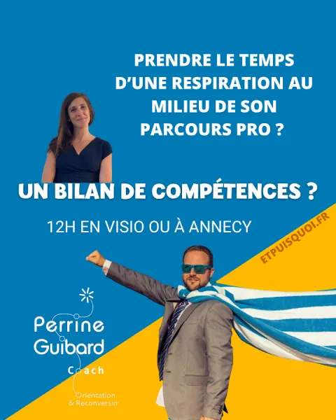

🌿 Transition pro
Bilan de compétences
- 6 séances
- 12 h d'accompagnement
- 1 profil Nova (DISC + motivations)
Pour ceux qui sentent que quelque chose s'essouffle. Qui ne veulent pas tout quitter, mais qui savent, au fond, qu'ils ne peuvent plus continuer exactement comme avant.
Vous vous reconnaissez ?
- Ennui ou perte de motivation
- Manque de sens dans votre travail
- Crainte de passer à côté de quelque chose
- Besoin de faire un point d'étape pour envisager la suite de votre carrière
Le parcours en détail
Un voyage en 6 étapes, 12 heures d'accompagnement individuel, pour aller chercher ce que vous savez déjà de vous-même, mais que vous n'avez jamais eu le temps de mettre en mots.
On commence par regarder le chemin parcouru : vos victoires, vos défis, vos compétences, souvent plus riches que vous ne le pensez. On explore ce qui vous motive en profondeur. On part à la chasse aux pistes professionnelles. Et on finit par construire un plan d'action concret, réaliste, qui vous ressemble.
Vous repartez avec
- Une connaissance claire de vos forces, de vos valeurs et de ce qui vous donne de l'énergie
- Des pistes professionnelles concrètes, explorées et hiérarchisées
- Un plan d'action avec des premières étapes : pas un rêve, un cap
- La certitude de vous être vraiment accordé du temps pour vous
Certains repartent avec un projet de reconversion. D'autres, avec la confirmation qu'ils sont au bon endroit, mais qu'il faut changer quelque chose. Tous repartent avec plus de clarté.
Vous n'avez pas besoin de tout quitter pour tout changer. Vous avez besoin de vous arrêter pour voir où vous allez vraiment.